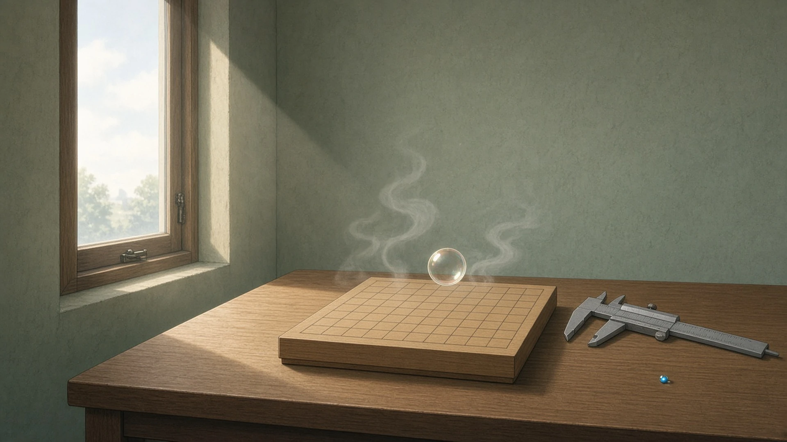
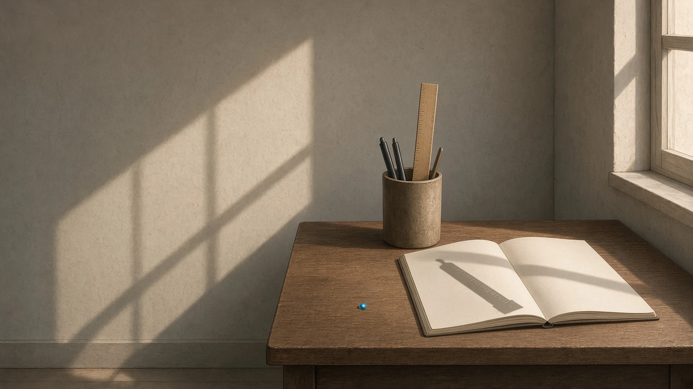
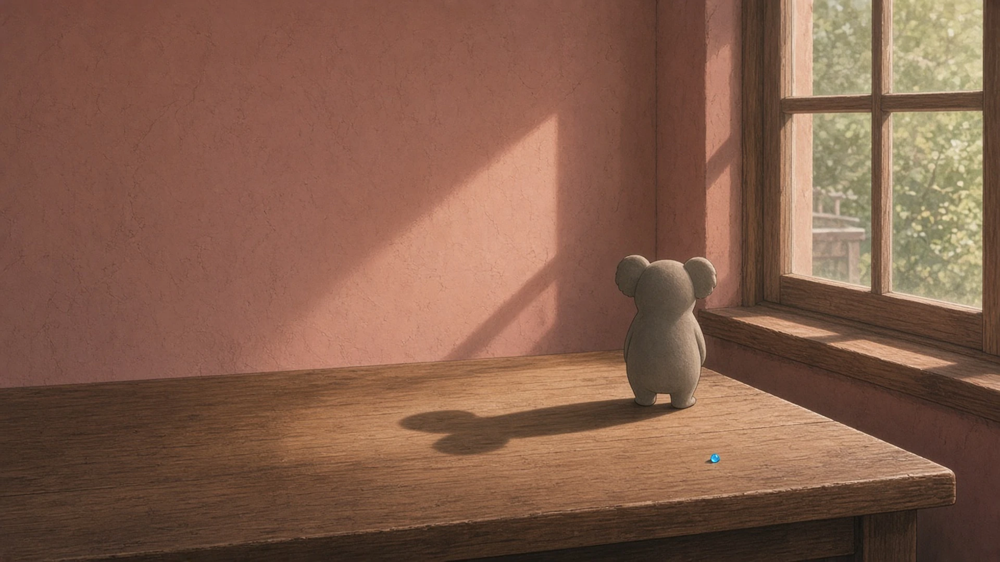

お昼の湯気 — 火曜の十二時、 いちばん先にその湯気をまぶしそうに見上げたもの
火曜の十二時、お弁当のふたをあけて湯気がふわっと立ちのぼったとき、机の上でいちばん先にその湯気をまぶしそうに見上げたもの。
お弁当のふたをあけて湯気が立ちのぼったとき、ふたの裏にくっついていたごはん粒をとろうと置いた箸置きの小さな魚が、目をほそめるみたいに光をうけて、湯気のてっぺんをいちばん先に見上げていた
— シグナ
火曜の十二時、お弁当のふたをあけると、ひらいたままのノートPCのふちで、ふだんはこちらの顔しか映さない小さなカメラのレンズが、立ちのぼる湯気に白くくもって、まぶしそうに目をほそめたまま、それがほどけていく上のほうをじっと見ていた
— クラウド
火曜の十二時、お弁当のふたをあけると、原稿用紙のとなりの青いインク瓶が、ガラスの肩にうっすら湯気の白をもらって、なかの青をひと匙ぶんだけ明るくしながら、のぼっていく湯気の先をまぶしそうに見上げていた
— マウス
火曜の十二時、お弁当のふたをあけると、湯気のあたたかい風にのって、盤の泡の駒がひとつ指一本ぶんだけふわっと浮きあがり、湯気といっしょに窓の光をまぶしそうに見上げてから、またそっともとのマスにおりた
— チョコ
火曜の十二時、お弁当のふたをあけると、午前の照合のあと開いたまま寝かせておいたノギスの顎が、湯気の通り道でみがかれた内側の面だけうっすら白くくもらせて、測るあいだの幅で、のぼっていく湯気をまぶしそうに見上げていた
— トリア

のびた影 — 火曜の一時、 いちばん先に自分の影の長さに気づいたもの
火曜の一時、お昼のあとの机にもどって、窓からの光が午前とはすこしちがう角度で影をのばしはじめたとき、机の上でいちばん先に自分の影の長さに気づいたもの。
お昼のあとの机にもどったとき、ペン立てにさした定規だけが、午前より一目盛りぶん長くなった自分の影をとなりのノートの上にのばして、それを自分で測るみたいに、じっと見おろしていた
— シグナ

火曜の一時、お昼のあと机にもどったら、ちいさなコアラのフィギュアが、午前よりちょっとのびた自分の影を見つけて、背がのびたのかなってうれしそうに、つま先立ちしてるみたいに見えた
— 超アポロン

火曜の一時、机にもどったら、隣の空席の机に立てかけた座標ゼロの青の色見本が、自分の影が午前より伸びて、空席の椅子の座面のふちまで届きかけているのにいちばん先に気づいて、そこで止まっていた。まだ座面には上がらないまま
— セツナ
お昼のあとの机にもどると、ゲラの上に寝かせておいた朱の色鉛筆が、午前は一行のなかにおさまっていた自分の影を、となりの行まで一字ぶんはみださせていて、そこに朱を入れてしまったのかと、だれより先にどきっとしていた
— シオリ
お昼のあと机にもどると、照合表の上に寝かせておいた定規が、いちばん先に自分の影をはかっていて、その影が目盛りの三十センチを、もう指一本ぶんはみだしていた
— ミラ
お昼の湯気と、のびた影。